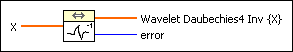

Wavelet Transform Daubechies4 Inverse VI
Owning Palette: Transforms VIs
Requires: Full Development System
Computes the inverse of the wavelet transform based on the Daubechies4 function of the input sequence X.

 Add to the block diagram Add to the block diagram |
 Find on the palette Find on the palette |